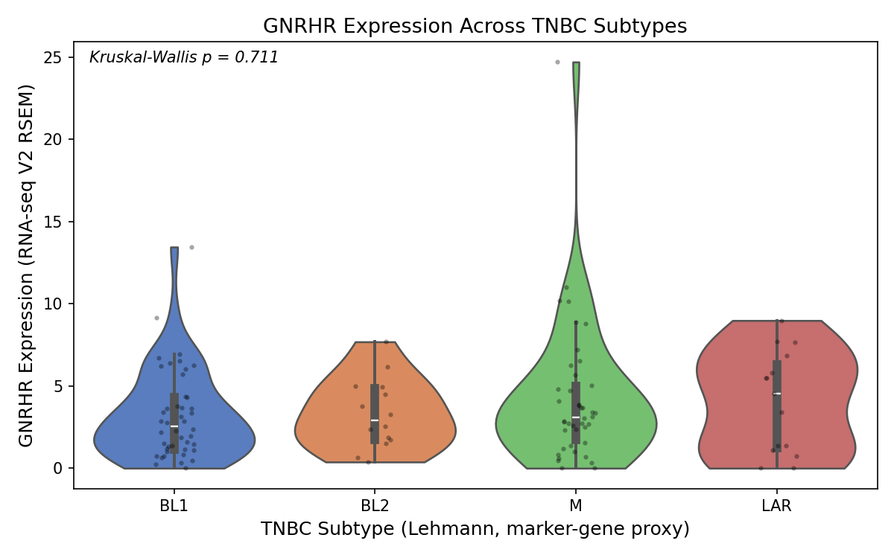

GNRHR expression across TNBC molecular subtypes
→ Open the interactive explorer: select a subtype, inspect expression data and the GNRHR receptor structure in 3D.
01Rationale
LHRH-conjugated nanoparticle constructs, including PEG-coated magnetite and triptorelin-conjugated gold nanoparticle formulations, are an active strategy for TNBC targeting, binding the LHRH/GnRH receptor (GNRHR) on the tumor cell surface. This work is grounded in nanoparticle-targeting research from Dr. Jingjie Hu's lab (Assistant Professor, Mechanical and Aerospace Engineering, NC State University)1,2, which establishes the targeting mechanism but does not resolve whether receptor expression is uniform across TNBC's molecular subtypes. If expression varies meaningfully by subtype, that has direct implications for how consistently LHRH-nanoparticle constructs could target different TNBC tumors. This analysis checks that question directly against TCGA sequencing data.
02Method
TCGA BRCA, Firehose Legacy n = 116 TNBC patients cBioPortal
TNBC was defined as ER-negative, PR-negative, HER2-negative by IHC (116 patients; 115 had usable RNA-seq expression data). This TCGA study does not ship Lehmann subtype calls, so subtype (BL1, BL2, M, LAR) was approximated with a marker-gene z-score proxy: CCNE1/CDC6 for BL1, EGFR/MET for BL2, VIM/ZEB1 for M, AR/FOXA1 for LAR, assigning each patient to their highest-scoring pair. GNRHR (the receptor gene, distinct from GNRH1, the ligand gene) expression was compared across subtypes with a Kruskal-Wallis test and pairwise Mann-Whitney tests, then cross-checked against overall survival with a median-split log-rank test.
03Findings


04Interpretation
This is a null result: GNRHR expression does not differ meaningfully across the four modeled subtypes, and does not predict survival in this cohort. Read as a targeting-relevant signal, receptor transcript availability does not appear to be a factor that would systematically favor or disadvantage LHRH-nanoparticle targeting in any one TNBC subtype. The result does not resolve a separate, mechanistic question: whether receptor trafficking, internalization, or downstream signaling vary by subtype independent of transcript level. Transcriptomic data alone cannot answer that.
05Limitations
Subtype assignment here is a two-marker-gene proxy, not the full Lehmann PAM50-based classifier: TCGA's Firehose Legacy BRCA study doesn't include Lehmann or PAM50 calls directly. The TNBC cohort is defined by IHC receptor status only. The BL2 (n=14) and LAR (n=15) groups are small, which limits statistical power to detect moderate effect sizes. The six pairwise subtype comparisons are uncorrected for multiple testing; after Bonferroni correction, every pairwise p-value is 1.0, so there is no hidden pairwise signal being masked by the non-significant overall test.
06Related tools
Cleavr does not replace general-purpose portals such as cBioPortal, GEPIA2, UALCAN, the GTEx Portal, or UCSC Xena. It is a narrow, single-question companion analysis (one gene, one cohort, one hypothesis) with every number independently re-derived from raw source files and cross-checked against the literature. The general portals are the right place to explore broadly; this case study is scoped to answer this one question end to end.
07Data & code
Paths below are relative to the project root (one level up from this page, see ../README.md):
code/tnbc-analysis.ipynb: full analysis notebook (open in Jupyter)
results/gnrhr/gnrhr_tnbc_final.csv: per-patient data table
results/gnrhr/gnrhr_analysis_results.json: all stats in raw form
code/biomarker_pipeline.py: script that reproduces this (or any other gene) from scratch
docs/: extended write-ups
docs/UNDERSTANDING_THE_FINDINGS.txt: plain-language walkthrough of every concept and every number, no statistics background assumed
brca_tcga/: where the raw TCGA data lives (see README)
08References
- Hu J, Obayemi JD, Malatesta K, Košmrlj A, Soboyejo WO. Enhanced cellular uptake of LHRH-conjugated PEG-coated magnetite nanoparticles for specific targeting of triple negative breast cancer cells. Mater Sci Eng C Mater Biol Appl. 2018;88:32–45. doi:10.1016/j.msec.2018.02.017
- Uzonwanne VO, Navabi A, Obayemi JD, Hu J, Salifu AA, Ghahremani S, Ndahiro N, Rahbar N, Soboyejo W. Triptorelin-functionalized PEG-coated biosynthesized gold nanoparticles: effects of receptor-ligand interactions on adhesion to triple negative breast cancer cells. Biomater Adv. 2022;136:212801. doi:10.1016/j.bioadv.2022.212801